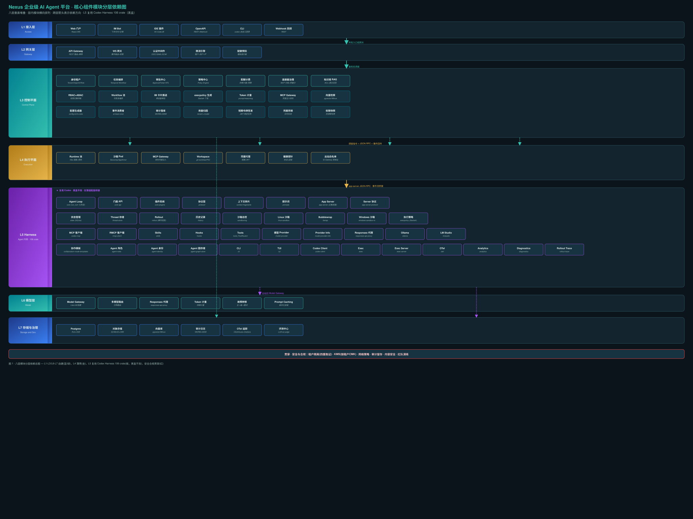
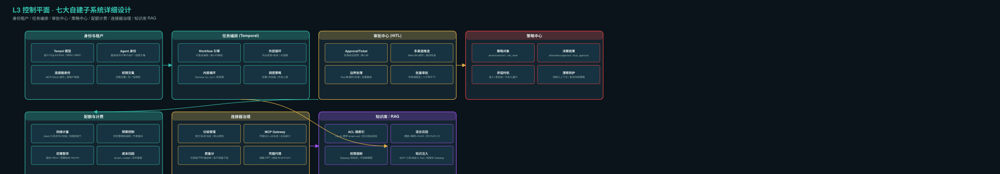
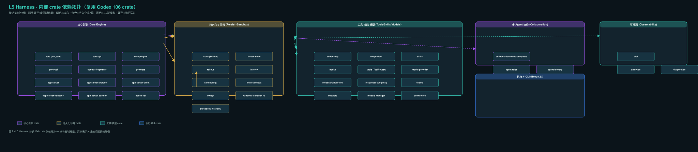

0. 设计判断（结论先行）
八层架构中 L5 复用 Codex Harness 的 106 个 Rust crate 作为黑盒执行内核，L1-L3 与 L6-L7 全自建，L4 是薄壳适配层。模块间依赖严格"上→下"，禁止逆序依赖；L5 与控制面之间仅经 app-server JSON-RPC 协议通信。
| # | 判断 | 理由 |
|---|---|---|
| 1 | L5 Harness crate 全量复用、零内核改动 | core（run_turn 七阶段）、app-server、execpolicy、sandboxing 等 106 crate 已覆盖 Agent 执行全链路 |
| 2 | app-server-protocol 是唯一集成面 | JSON-RPC 2.0 双向事件流、Thread/Turn/Item 三原语、thread/resume/fork/rollback、审批回写 |
| 3 | 控制面自建七大子系统，各自独立 | 身份租户/任务编排/审批中心/策略中心/配额计费/连接器治理/知识库RAG，经 Temporal 或事件总线松耦合 |
| 4 | 模块依赖严格分层，禁止逆序 | L1→L2→L3→L4→L5→L6/L7；L5 不反向依赖任何上层 |
| 5 | 配置即政策，不分支化 | 租户差异 = 运行时注入 config.toml + execpolicy.rules + enabled_tools + AGENTS.md |
1. 八层模块清单总览

| 层 | 职责 | 子模块数 | 复用Codex | 关键crate/技术 |
|---|---|---|---|---|
| L1 接入层 | 多渠道统一入口 | 6 | 否 | React+WS / IM Bot / IDE / REST / CLI |
| L2 网关层 | 南北向流量、鉴权、实时推送 | 5 | 否 | API Gateway / WS网关 / OIDC/SAML / 限流 |
| L3 控制平面 | 平台的大脑与账本 | 7子系统×3-4 | 否（自建核心） | Temporal / Postgres RLS / 策略引擎 |
| L4 执行平面 | Harness 托管外壳 | 7 | 薄壳+复用 | K8s Pod / MCP Gateway / 凭据代理 |
| L5 Harness | Agent 执行内核 | 40+ crate | 是（黑盒） | core / app-server / execpolicy / sandboxing |
| L6 模型层 | 模型访问与计量 | 6 | 部分复用 | model-provider / responses-api-proxy / ollama |
| L7 存储与治理 | 持久化与可观测 | 6 | 否 | Postgres / S3 / pgvector / WORM / OTel |
| 贯穿 | 安全与合规 | 6 域 | 否 | KMS / NetworkPolicy / 审计 / 红队 |
2. L1 接入层
2.1 模块清单（6 个模块）
| 模块 | 形态 | 职责 | 上游 | 下游 |
|---|---|---|---|---|
| Web 门户 | React + WS | 会话列表、任务时间线、审批抽屉、产物预览、Diff 查看 | 无 | L2 API Gateway + WS 网关 |
| IM Bot | 飞书/钉钉/企微/Slack | 审批推送（卡片消息）、任务通知 | 无 | L2 API Gateway |
| IDE 插件 | VS Code/JetBrains | 远端 Thread 映射到本地、代码 diff 预览、审批 | 无 | L2 网关代理 |
| OpenAPI | REST + Webhook | Agent 能力被业务系统调用、任务完成回调 | 无 | L2 API Gateway |
| CLI | codex + 自定义登录 | 开发者体验入口、批处理脚本 | 无 | L2 网关（OAuth device flow） |
| Webhook 回调 | REST | 任务完成、审批结果异步通知 | L3 事件总线 | 无 |
统一约束：所有入口都不直连 Harness（L5）。必须经 L2 网关，否则审计链路断裂。
IM Bot 审批卡片：飞书/钉钉卡片消息承载"批准/拒绝/修改后批准"三按钮，回调经 L2 网关鉴权后写入 L3 审批中心。
3. L2 网关层
3.1 模块清单（5 个模块）
| 模块 | 职责 | 关键接口 | 上游 | 下游 |
|---|---|---|---|---|
| API Gateway | REST 路由、请求校验、幂等（Idempotency-Key） | HTTP 路由 → L3 后端 | L1 入口 | L3 控制面各子系统 |
| WebSocket 网关 | 会话事件推送、订阅权限驱动 | subscribe(thread_id) | L1 Web 门户 | L3 事件总线 + L7 Postgres |
| 认证中间件 | OIDC/SAML 对接企业 IdP、SCIM 同步 | token → 注入 tenant_id/user_id/roles | L1 入口 | L3 身份租户 |
| 限流引擎 | 租户级 + 用户级 + IP 级 | 放行/拒绝/排队 | L1 入口 | 无 |
| 配额预扣 | 粗粒度拦截（预估 token + 沙箱时长） | 预扣结果 | L3 配额计费 | L3 配额计费 |
WS 网关订阅模型：subscribe(thread_id) → 校验用户对该 Thread 的读权限 → 建立事件推送通道。权限变更立即断连。
幂等键：Idempotency-Key header → Redis SET NX → 重复请求直接返回缓存结果。
4. L3 控制平面 — 七大自建子系统

4.1 身份与租户
Tenant → OrgUnit（多级，映射部门树）→ User/ServiceAccount → Role（owner/admin/developer/auditor/viewer）
权限继承规则与数据模型
Agent 可用权限 = 用户权限 ∩ 工作区权限 ∩ Agent 角色上限 ∩ 策略中心允许四者取交集，任一为空即拒绝。三个必须区分的身份：
- 用户身份（人在用）
- Agent 身份（服务账号，权限是用户的子集且需显式授予）
- 连接器身份（MCP/OAuth 委托令牌，按租户隔离存储）
Tenant(id, name, plan, isolation_tier, cmk_id, quota_profile, status)
└── OrgUnit(id, tenant_id, parent_id, path, name)
└── User(id, tenant_id, idp_subject, email, display_name)
└── ServiceAccount(id, tenant_id, name, role_id, cert_fingerprint)
└── Workspace(id, tenant_id, name, env_tag, repos_json, ...)
└── Membership(id, tenant_id, user_id, org_unit_id, role_id, scope_json)4.2 任务编排（Temporal Workflow）
外层（平台）Workflow 内层（Harness）run_turn
├─ 申请 Pod ├─ 准入（策略快照注入）
├─ 建连 app-server ├─ 快照（上下文序列化）
├─ 下发任务（thread/start 或 resume） ├─ 采样（模型调用）
├─ 消费事件流 → 写 Postgres ├─ 工具调度（ToolRouter）
├─ 处理审批（等几小时） ├─ 结果写回（Item 落盘）
├─ 收尾结算（用量+审计） ├─ 压缩判定（auto compact）
└─ 销毁 Pod └─ 完成/中断
↑ 事件流关联，不混为一个循环 ↑为什么用 Temporal 而非自建状态机：审批可能等几小时、Pod 会崩、网络会断——只有持久化工作流能天然表达"等三天再继续"。
4.3 审批中心（HITL）
审批流程：跨进程 HITL 桥接（最复杂的一处）
① app-server 发出审批请求事件
↓
② 适配层解析 → 控制面创建 ApprovalTicket（pending）
├─ 内容：thread_id / turn_id / item_seq / 工具名 / 参数(脱敏) / diff预览 / 风险等级
├─ 策略：谁可批（单人/双人/指定角色）、超时动作（默认拒绝）
└─ 快照：审批时上下文（事后可看"批的是什么"）
↓
③ 推送：Web 抽屉 + IM 卡片 + 邮件（按风险选渠道）
↓
④ 用户决策（批准/拒绝/修改后批准/转交）
↓
⑤ 决策先落库（decided）再回写 app-server
↓
⑥ app-server 继续/中止；结果回事件流闭环| 边界情况 | 处理 |
|---|---|
| Pod 等待时崩溃 | 审批状态在 DB，Pod 重建后 resume，item_seq 去重，已决策直接重放 |
| 审批超时 | 默认拒绝（非批准），通知申请人 |
| 审批期间权限撤销 | 决策时重新校验审批人权限，失效则 ticket 作废 |
| 修改参数后批准 | 重新走策略求值（改参数=新请求） |
| 批量相似请求 | 作用域有限定：仅该目录/仅该工具/≤1h |
| 审计 | 请求快照+决策人+时间+理由不可篡改 |
4.4 策略中心
| 模块 | 职责 | 关键接口 | 上下游 |
|---|---|---|---|
| 策略对象管理 | 策略 CRUD | createPolicy / updatePolicy | L2管理→L7 Postgres |
| 决策引擎 | 求值→allow/deny/require_approval/dual_approval/audit_only | evaluate(tenant,role,workspace,tool,action,risk) | L3编排+审批→L7 |
| 漂移防护 | 策略快照写入任务上下文 | snapshotPolicy(taskContext) | L3编排→L7 |
| execpolicy 生成 | 按策略生成 Starlark 规则集 | generateExecPolicy(tenant,role,riskLevel) | L3配置生成→L4沙箱 |
求值时机：任务准入时一次 + 每次高危工具调用前一次（不把准入当永久通行证）。
4.5 配额与计费
四维计量与预算控制
| 维度 | 计量内容 |
|---|---|
| token | prompt / cached / reasoning / output |
| 工具调用 | 次数 + 类型 + 成本 |
| 沙箱时长 | 运行秒数 + 资源规格 |
| 存储流量 | 存储字节 + 出站流量 |
归因维度：tenant → org_unit → user → thread → turn → model
预算控制：软阈值告警 → 降档经济模型 → 硬阈值熔断（任务优雅暂停保存 rollout，而非直接杀）
4.6 连接器治理
分级管理与 MCP Gateway
分类分级：官方认证 / 企业私有 / 社区（默认禁用，需管理员显式开启）
质量分：可用性、P95 延迟、错误率、权限最小化 → 低于阈值自动降级或下线
安全要点：
- MCP stdio 型服务器是重大风险面（配置即代码执行）
- 强制
.codex/config.toml只在受信任工作区生效 enabled_tools白名单优先于disabled_tools- 破坏性注解工具恒定需审批
config.toml里不出现任何真实密钥
4.7 知识库 / RAG
metadata/ACL 过滤 → 稠密+稀疏混合召回 → rerank → 只回填支撑片段（附 chunk_id 与权限版本）关键：先过滤后召回，绝不先召回后过滤。权限在 Gateway 侧强制，不依赖模型自觉遵守。
与 Harness 的衔接：知识检索做成 MCP 工具或自定义 Tool，让 Harness 像调其他工具一样调用。
5. L4 执行平面 — 薄壳
5.1 模块清单（7 个模块）
| 模块 | 职责 | 复用Codex |
|---|---|---|
| Runtime 池调度 | K8s Pod 调度 + 预热池 + 销毁回收 | 否 |
| 沙箱 Pod | 容器隔离（Seccomp/AppArmor/Kata） | 否（容器层） |
| MCP Gateway 侧车 | 凭据注入 + 工具白名单 + 出站审计 + 脱敏 | 否 |
| Workspace 供给 | git worktree / PVC 快照 / AGENTS.md 注入 | 否 |
| 凭据代理 | 短期 JWT 签发/吊销 | 否 |
| 健康探针 | app-server 存活探测 + 僵尸进程处理 + rollout 上传 | 否 |
| 出站白名单 | NetworkPolicy 默认拒绝，仅放行 Model Gateway + MCP Gateway | 否 |
三层沙箱（缺一不可）
| 层 | 技术 | 防什么 | 对应 Codex crate |
|---|---|---|---|
| ① 容器/微虚拟机 | K8s Pod + Seccomp/AppArmor；高敏 Kata/Firecracker | 租户间横向逃逸 | 无（Nexus 自建） |
| ② 命令级 OS 沙箱 | Seatbelt / Landlock+seccomp+bwrap / Windows token | Agent 乱跑命令 | sandboxing linux-sandbox bwrap windows-sandbox-rs |
| ③ 网络层 | NetworkPolicy 默认拒绝全部出站 | 数据外泄、C2 回连 | 无（K8s NetworkPolicy） |
6. L5 Harness — Codex Crate 映射（重点）
L5 是唯一复用 Codex 的层，106 个 Rust crate 按功能域映射为 8 个模块组。黑盒不改，仅薄适配层桥接。

6.1 核心引擎模块组
12 个 crate
| Codex crate | 职责 | Nexus 中的角色 | 关键接口 |
|---|---|---|---|
| core | Agent 主循环 run_turn 七阶段 | 执行内核，黑盒调用 | run_turn() / run_auto_compact() |
| core-api | 门面 API | 适配层调用入口 | CoreAPI trait |
| core-plugins | 插件系统 | 企业 Skill 扩展基础 | Plugin trait |
| protocol | 协议层（Turn/Item/Event 类型） | 事件类型映射来源 | Turn / Item / Event |
| context-fragments | 上下文碎片管理 | 上下文工程基础 | ContextFragment |
| prompts | 提示词管理 | 系统提示注入点 | SystemPrompt |
| app-server | 主集成面，JSON-RPC 2.0 | Nexus 唯一 Harness 集成入口 | thread/start / turn/* / thread/resume / fork / rollback |
| app-server-protocol | 协议定义（v1/v2） | 类型生成来源 | generate-json-schema / generate-ts |
| app-server-client | 客户端库 | 适配层连接管理 | AppServerClient |
| app-server-transport | 传输层（stdio/unix socket/WS） | Pod 内通信 | Transport trait |
| app-server-daemon | 守护进程模式 | Pod 内 app-server 守护 | Daemon |
| codex-api | 实验性 API | 内部工具使用 | experimental_api.rs |
6.2 持久化与沙箱模块组
9 个 crate
| Codex crate | 职责 | Nexus 中的角色 |
|---|---|---|
| state | 本地 SQLite 状态管理 | 可丢弃缓存（云端 Postgres 为真相） |
| thread-store | Thread 跨进程重启恢复 | 会话持久化桥接基础 |
| rollout | 事件回放文件 | 改造点：事件外送到云端 + 对象存储 |
| history | 历史记录 | 会话历史查询 |
| sandboxing | 沙箱总控 | 直接用，不重写 |
| linux-sandbox | Linux Landlock + seccomp | 容器内需自检 |
| bwrap | Bubblewrap 沙箱 | Linux 容器层补充 |
| windows-sandbox-rs | Windows restricted token | Windows 部署 |
| execpolicy | Starlark 规则引擎 | 按租户下发规则集 |
6.3 工具/技能/模型模块组
12 个 crate
| Codex crate | 职责 | Nexus 中的角色 |
|---|---|---|
| codex-mcp | MCP 客户端 | 经 MCP Gateway 代理 |
| rmcp-client | Rust MCP 客户端（新版） | MCP 协议实现 |
| skills | 可复用 Markdown 程序化技能 | 企业 Skill 市场基础 |
| hooks | 生命周期钩子 | 企业生命周期扩展 |
| tools | 工具路由（ToolRouter） | 统一工具定义 + 动态工具解析 |
| model-provider | 模型 provider 抽象 | 接自有 Model Gateway |
| model-provider-info | Provider 信息管理 | 模型配置 |
| responses-api-proxy | Responses API 代理 | 复用：指向自有 Model Gateway |
| ollama | Ollama 本地模型 provider | 私有化部署 |
| lmstudio | LM Studio 本地模型 provider | 私有化部署 |
| models-manager | 模型管理 | 模型配置中心 |
| connectors | 连接器 | 外部系统对接 |
6.4 多 Agent 协作模块组
| Codex crate | 职责 | Nexus 中的角色 |
|---|---|---|
| collaboration-mode-templates | 协作模板（编排者-工作者/对等/批评对抗） | 团队 Agent 编排参考 |
| agent-roles | Agent 角色定义 | 多角色协作 |
| agent-identity | Agent 身份管理 | 多租户 Agent 身份映射 |
| agent-graph-store | Agent 关系图存储 | 协作拓扑持久化 |
6.5 执行与 CLI 模块组
| Codex crate | 职责 | Nexus 中的角色 |
|---|---|---|
| cli | CLI 入口 | 开发者体验（自定义登录） |
| tui | TUI 交互界面 | 内部调试用 |
| codex-client | Codex 客户端库 | 适配层客户端 |
| exec | 一次性执行模式 | CI 场景用 |
| exec-server | 执行服务器 | 远程执行支持 |
| exec-server-protocol | 执行服务器协议 | 协议定义 |
6.6 可观测模块组
| Codex crate | 职责 | Nexus 中的角色 |
|---|---|---|
| otel | OpenTelemetry 集成 | trace 串联（用户→任务→工具→模型） |
| analytics | 分析数据收集 | 使用分析 |
| diagnostics | 诊断工具 | 故障定位 |
| rollout-trace | Rollout 追踪 | 会话回放与审计 |
6.7 适配层（唯一贴着 Codex 写的代码）
| # | 职责 | 做什么 | 不做什么 |
|---|---|---|---|
| 1 | 协议桥接 | app-server JSON-RPC → 内部事件总线；generate-json-schema/generate-ts 纳入 CI | 不改协议本身 |
| 2 | 配置生成 | 按 tenant+role+workspace+risk_level 生成 config.toml、execpolicy.rules、MCP 声明、Skills 清单 | 不改配置格式 |
| 3 | 命令包装 | 暴露 start/resume/interrupt/approve/fork/archive 六动作 | 不改 run_turn |
| 4 | 健康检查与回收 | 探测 app-server 存活、处理僵尸进程、Pod 退出前上传 rollout | 不改工具路由/压缩算法/execpolicy 求值器 |
7. L6 模型层
6 个模块
| 模块 | 职责 | 复用 Codex |
|---|---|---|
| Model Gateway | 统一入口（LiteLLM/自建） | 部分（responses-api-proxy） |
| 多模型路由 | 按任务复杂度分档路由 | 否 |
| Responses 代理 | Codex Responses API 代理 | 是（responses-api-proxy） |
| Token 计量 | 四维计量（prompt/cached/reasoning/output） | 否 |
| 故障转移 | 主→备→重试 | 否 |
| Prompt Caching | 版本化前缀缓存 | 否 |
路由策略：分类/抽取走经济模型，规划/复杂工具编排走强模型，长任务中段用中档。必须在自有评测集上校准。
私有化：数据不出域租户指向自建 vLLM/Ollama（Codex 内置 ollama/lmstudio provider）。
8. L7 存储与治理
| 模块 | 存储选型 | 关键设计 |
|---|---|---|
| Postgres | PostgreSQL（RLS + 分区） | RLS 兜底租户隔离；item 表按 tenant_id+时间分区 |
| 对象存储 | S3/MinIO（按租户前缀 + CMK） | 大对象外置；禁用租户 CMK → 数据不可解密 |
| 向量库 | pgvector / Milvus | chunk 携带 tenant_id + acl_tags + permission_version |
| 审计日志 | WORM 追加写 + SIEM | 应用层无 DELETE/UPDATE 权限 |
| OTel 追踪 | ClickHouse + Grafana | trace 串"用户→任务→工具→模型" |
| 评测中心 | 自建 + LLM-as-judge | CI 门禁：任一变更必须跑回归 |
9. 安全与合规（贯穿层）
四重隔离取证 + 零密钥 + 自检
四重取证（缺一不可）
| 域 | 技术 | 贯穿层 |
|---|---|---|
| 逻辑隔离 | Postgres RLS 兜底，强制带 tenant_id | L3+L7 |
| 运行时隔离 | namespace + 节点亲和性 + NetworkPolicy | L4 |
| 密钥隔离 | 按租户 CMK，禁用后不可解密 | L7 对象存储 |
| 存储隔离 | 对象存储按租户前缀 + 独立桶策略 | L7 |
沙箱内零长期密钥
| 密钥类型 | 处理 |
|---|---|
| 模型 API Key | 绝不进沙箱，只到 Model Gateway，任务令牌换调用 |
| MCP/企业 API 凭据 | MCP Gateway 侧车持有，短期委托令牌向控制面换 |
| Git 凭据 | 凭据代理 + 只读/限定分支，禁推保护分支 |
| 云厂商 AK/SK | IRSA/Workload Identity 换短期角色凭证，不落盘 |
| 用户 OAuth 令牌 | 加密存控制面密钥库，按需换短期 access token，结束吊销 |
沙箱启动自检清单
- Landlock/seccomp/Seatbelt 可用性验证通过
- 出站网络仅能到达两个白名单地址
- 镜像内无长期密钥文件（镜像扫描）
- 只读根文件系统 + 非 root 用户
- 资源限额（CPU/内存/磁盘/PID）已生效
10. 模块间依赖关系总结
L1 接入层 ──→ L2 网关层 ──→ L3 控制平面 ──→ L4 执行平面 ──→ L5 Harness
│ │ │ │
│ │ │ ├──→ L6 模型层
│ │ │ │
│ │ ↓ ↓
└──────────────┴──────────→ L7 存储与治理 ←──┘
│
安全合规贯穿（全层）依赖方向约束
| 依赖方向 | 允许 | 禁止 |
|---|---|---|
| 上 → 下 | 经接口（协议/事件/API） | 直接引用下层 crate/模块 |
| L5 → L6（模型调用） | 经 Model Gateway 出站 | L5 直连外部模型 API |
| L5 → L7（rollout 上传） | 经对象存储 SDK | L5 直连 Postgres |
| L3 → L5（任务控制） | 经 app-server JSON-RPC | L3 直接调用 L5 crate |
| L5 → L3（反向） | 禁止 | L5 不感知控制面存在 |
| L6 → L3（反向） | 禁止 | L6 不感知控制面存在 |
L5 内部 crate 依赖关键路径
core (run_turn)
├──→ app-server-protocol (协议类型)
├──→ state / thread-store / rollout (持久化)
├──→ sandboxing → linux-sandbox / bwrap / windows-sandbox-rs
├──→ execpolicy (命令策略求值)
├──→ codex-mcp / rmcp-client (MCP 工具)
├──→ tools (ToolRouter)
├──→ model-provider → responses-api-proxy / ollama / lmstudio
├──→ collaboration-mode-templates → agent-roles → agent-identity → agent-graph-store
└──→ otel / analytics / diagnostics / rollout-trace (可观测)11. 配套产物索引
| 产物 | 文件 |
|---|---|
| 详细方案（Markdown） | module-layering.md |
| 分层依赖图（SVG 源） | module-layering.svg |
| 分层依赖图（PNG 位图） | module-layering.png |
| Harness crate 拓扑图 | harness-crate-topology.svg |
| 控制面子系统设计图 | control-plane-subsystems.svg |
| 交互报告（HTML） | module-layering-report.html |
| 生成脚本 | _gen_svg.py |
本方案与 ../Nexus 基于CodexHarness的企业级Agent平台_系统设计与实施路线图.md §2.2 八层架构、§3 分层详细设计对齐，为其工程化落地版的模块级展开。